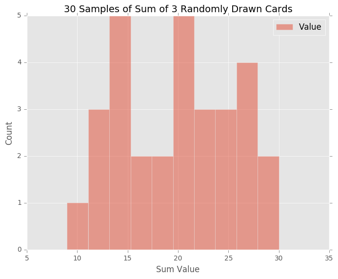

Setting Up Multiple GitHub User Account on One Machine
It is not unusual that developers need multiple github accounts on a single machine. I was looking through the resources on the internet and found this the most useful. None the less, I decided to write a post about this, just so for my own references.
Here are the steps: - Create the users (however many you need) on github first.
- Use
ssh-keygento generate various ssh keys. When prompted, make sure the keys are named appropriately so they can be identified easily.
ssh-keygen -t rsa -C "{email1@youremail1.com}"
ssh-keygen -t rsa -C "{email1@youremail1.com}"
Make sure emails used are the ones you used for creating the github accounts.
Usually ssh keys are stored under home/{username}/.ssh folder (or /Users/{username}/.ssh if you are on mac). For example, the following keys are generated:
~/.ssh/id_rsa_{git_username1}
~/.ssh/id_rsa_{git_username2}
- Add the keys to SSH to the SSH Agent on the system:
ssh-add ~/.ssh/id_rsa_{git_username1}
ssh-add ~/.ssh/id_rsa_{git_username2}
To delete ALL previously added keys:
ssh-add -D
To delete a previously added key:
ssh-add -d {id_rsa_keyname}
To list ALL previously added keys:
ssh-add -l
- The public keys need to be added to the github accounts accordingly.
pbcopy < ~/.ssh/id_rsa_{git_username1}.pub
Paste the content to corresponding github SSH key management.
Repeat for all other keys for other accounts.
- Configure SSH config
cd ~/.ssh/ nano config
- Add the following lines, modify accordingly:
# github_{user1} account
Host github.com-{user1}
HostName github.com
User git
IdentityFile ~/.ssh/id_rsa_{git_username1}
IdentitiesOnly yes
# github_{user2} account
Host github.com-{user2}
HostName github.com
User git
IdentityFile ~/.ssh/id_rsa_{git_username2}
IdentitiesOnly yes
- Manage Global Git Configs. You may either define those in command line or store them in a .gitconfig_global under
[core] editor = atom -n -w excludesfile = {filepath}/.gitignore_global [push] default = upstream [merge] conflictstyle = diff3 [color] ui = true [user] name = {leave null, define this locally} email = {leave null, define this locally}
- Manage Local Git Configs
For example, github user1
[user] name = {github_username1} email = {github_email1} [remote "origin"] url = git@github.com-{user1}:{github_username}/{github_repo}
Note that the host in URL has to be the right host defined earlier in the ~/.ssh/config file.
The same precaution has to be taken when cloning. ie when executing git clone command, make sure the git host in 'copied and pasted' repo url is edited accordingly to the right user/host.
Matplotlib on OSX with VirtualEnv/VirtualEnvWrapper (and Pip)
I like keeping my mini projects separate, mostly under its own virtual environment set up. I use VirtualEnv and VirtualEnvWrapper.
As I am working on code for data analysis and data visualization, inevitably I need the matplotlib library. Reading various resources online, I managed to get it to work. And with this post, I hope to document the steps for future reference.
My environments:
- MacBookPro, OS macOS Sierra (10.12.1)
- VirtualEnv v.15.0.3
- python v.3.5.1
- Pip v.9.0.1
Steps:
1. Activate the virtual environment: workon {env}
2. Show pip packages: pip3 list
3. Install necessary packages for data analysis and plotting: pip install numpy scipy matplotlib pandas sympy nose
4. Install PyQt5: pip install PyQt5
5. Modify matplotlibrc file: nano {path to env}/lib/{pythonX.X}/site-packages/matplotlib/mpl-data/matplotlibrc
- At the top of the configurations, define backend: backend : Qt5Agg
- Then, define backend binding: backend.qt5 : PyQt5
- Save file.
You are all set now.
Descriptive Statistics Final Project - Random Draws of Card Deck
Instead of working on this project on a google sheet files, I decided to write my own python script to simulate the experiments.
1) Histogram generated shown as below. 
Histogram for original card values are negatively skewed (towards right).
2) Randomly Drawing 3 Cards
I wrote python scripts with pandas and matplotlib for the rest of the project.
3) Distribution of Sum of 3 Randomly Drawn Cards
30 Samples of Sum of 3 Randomly Drawn Cards

Statistical Description of this sample with n = 30:
count 30.000000
mean 19.866667
std 5.550603
min 9.000000
25% 15.000000
50% 20.000000
75% 24.000000
max 30.000000
500 Samples of Sum of 3 Randomly Drawn Cards 
Statistical Description of this sample with n = 500:
count 500.000000
mean 19.542000
std 5.337529
min 5.000000
25% 16.000000
50% 20.000000
75% 24.000000
max 30.000000
4) As sample size increases, the curve gets more normalized (bell-shaped).
5) Q: Within what range will you expect approximately 90% of your draw values to fall? What is the approximate probability that you will get a draw value of at least 20? Make sure you justify how you obtained your values.
To determine the range where 90% of the values fall, I found the closest corresponding z-value to be 1.28. Therefore, with the following formula, I determined the range for our sample with 30 draws, and sample with 500 draws.
\[
z = \frac{ x - \mu }{\sigma} \\
x_{30, 90%} = 26.971442 \\
x_{500, 90%} = 26.374 \\
\]
To draw at least 20 from each of the samples, the corresponding z values are:
\[ z_{30, >20} = \frac{20 - 19.866667}{5.550603} = 0.024021 \\ z_{500, >20} = \frac{20 - 19.542000}{5.337529} = 0.085807 \\ \]
For sample with sample size 30, at z = 0.024021, the probability is 0.51 (51%). That means the change of drawing 3 cards with sum greater than 20 from this sample is 49%.
For sample with sample size 500, at z = 0.024021, the probability is 0.534 (53.4%). That means the change of drawing 3 cards with sum greater than 20 from this sample is 46.6%.
Finally, here's a link to the z-table for reference.
Inferential Statistics - Chi-Squared Tests
Types of Data
- Ordinal Data - ranks with no fixed intervals nor zeros
- Interval Data - ranks with equal intervals
- Ratio Data - ranks with equal intervals and an absolute zero
- Nominal/Categorical Data - data with no numerical values (typically yes/no, in/out, successful/unsuccessful)
Types of Tests
- Parametric - hypothesis testing that make assumptions about the parameters of the populations, \( \mu \) and \( \sigma \).
- Non-Parametric - hypothesis testing that do not require population parameters
Characteristics of Non-Parametric Testings
- There is no way to calculate a mean or standard deviation
- The data is based on frequencies or proportions
- The data is nominal (successful vs unsuccessful, 1 or 0, yes or no, mountain vs beach etc.)
- The data are not based on Normal distribution
\( \chi^2 \) Goodness of Fit Test
How well our observed frequencies 'fit' our expected frequencies?
\[
\chi ^2 = \sum{ \frac{(f_0 - f_e)^2}{f_e} }
\]
\( \chi^2 \) is smaller when the observed value is closer to the expected value.
\( \chi^2 \) is NEVER negative and therefore \( \chi^2 \) statistic is one-directional.
For each category, we have one \( \chi^2 \) statistics. When we have more categories, \( \chi^2 \) statistics get bigger with the number of categories.
Degrees of Freedom
For n x m, 2 dimensional nominal data: \[ df = (N_n - 1) * (N_m - 1) \\ \text{where } N_n \text{ and }N_m \text{ are number of columns, and number of rows respectively. } \]
Cramer's V \( (\phi_c) \)
\[ \phi_c = \sqrt{\frac{\chi^2}{n(k-1)}} \\ k \text{ is the smaller number between number of rows or number of columns}\\ n \text{ is the total sample size regardless of treatments} \]
Assumptions and Restrictions for \(\chi^2\) Tests
- Avoid dependent observations. Independence will be violated if any participants were given two treatments instead of one.
- Avoid small expected frequencies, therefore in general have a larger number of participants. Sample size should be at least 20, and each expected cell frequencies should be at least 5.
Inferential Statistics - Regressions
Linear Regressions
Line of best fit forms a line to help us:
- describe data
- make predictions
Observed Y vs Expected Y
Expected Y \( \hat{y} \) are the ones calculated/predicted based on the best fit regression line.
Observed Y \( y \) are collected data or real-life data.
Residual is the difference between Observed value and Expected value.
A few ways to find the line of best fit:
- Find a line to minimize the sum of residuals. The problem with this approach is sometimes, negative and positive residuals cancel each other out.
- Find a line that minimize the sum of absolute residuals.
- Find a line that minimize the sum of squared residuals, \( \sum{(y - \hat{y})} \)
When we use calculus to determine the slope, b:
\[
b = \frac{\sum{(y_i - \bar{y})(x_i - \bar{x})}}{\sum{(x_i - \bar{x})^2}} \\
= r (\frac{S_y}{S_x}) \\
\text{where } r \text{ is Pearson's Correlation Coefficient and }\\
S \text{ are standard deviations of } x \text{ and } y.
\]
We have decided to symbolize the regression line by y = bx + a, where b represents the slope and a represents the y-intercept.
Since \( b = r(\frac{S_y}{S_x}) \), we can also symbolize the regression line like this:
\[ y = r(\frac{S_y}{S_x})x + a \]
Pearson's Correlation Coefficient \( r \)
A high \(r\) value indicates a strong correlation. This could contribute to high \(r^2 \) value, which indicates the percentage of differences in Y is due to differences in X.
Standard Error of Estimates
Standard error of estimates:
\[
SE = \sqrt{ \frac{\sum (y - \hat{y})^2}{N-2}}
\]
Factors that Affect the Regressions
- outliers affect the value of r, correlation Coefficient
- outliers also affect the linear regression line
-
Inferential Statistics - Correlations
Relationships
How one variable is related to the other?
Variable X and Y
X is often referred to as the predictor, explanatory, independent variable.
Y is often referred as the outcome, response, dependent variable.
Scatterplot is a popular/ most common way to show relationship of X and Y variables.
Strong Relationships
Strong relationships usually have less scattered plots. If we draw an eclipse surrounding the data points, the smaller the ratio of minor axis to the major axis, the stronger the relationship is.
Direction of Relationships
Positively related - Y responses in the same direction as X changes; Negatively related - Y responses in opposite directions of X changes.
Correlation Coefficient, (r)
Also known as Pierson's r.
r is a fraction, with the covariance of x and y (how much do they vary together) as the numerator, and the product of standard deviation of x and standard deviation of y as the denominator.
\[
r = \frac{cov(x,y)}{ S_x * S_y } = \frac{cov_{x,y}}{ S_x * S_y }
\]
r measures the strength of a relationship, by measuring how closely the data falls along a straight line.
Even though r is a ratio, it is not interpreted as a percentage. However, \(r^2\) is a percentage of the variation in y explained by variation in x. \(r^2\) is called the coefficient determination.
True Correlation of Population, rho, \( \rho \)
We usually perform hypothesis testing with t-tests.
\[
H_{0} : \rho = 0 \\
H_{1} : \rho \gt 0 \\
H_{1} : \rho \lt 0 \\
H_{1} : \rho \ne 0
\]
Causation vs Correlations
Causation - One variable caused another to happen.
Correlation - There is a relationship between two variables. But there are lots of lurking variables. For example, there are two variables X and Y. They could have a relationship because both of them are influenced by variable A, or Y is influenced by X through variable A. In this case, variable A is called the mediating variable.
To make a causal statement:
- the independent variable would have to occur BEFORE the dependent variable.
- have to rule out other lurking variables too
Fallacies
Ambiguous Temporal Precedence - we don't know which variable happens first.
Third variable problem
Post-hoc fallacy
t value and Correlation Coefficient, (r)
t value and r:
\[
t = \frac{r \sqrt{N-2}}{\sqrt{1-r^2}}
\]
where \(df\) is \( N - 2 \)
Inferential Statistics - ANOVA Continued.
One of the popular Multiple Comparison Tests is Tukey's Honestly Significant Differences.
Tukey's Honestly Significant Differences (HSD)
Tukey's HSD is calculated as the following:
\[
\text{Tukey's HSD} = q * \sqrt{\frac{MS_{within}}{n}} \\
q \text{ is looked up with } df_{within} \text{ and } k \text{, the number of treatments/sample groups} \\
n \text{ is the number of samples in one sample group}
\]
If the mean difference between/among treatments are greater than Tukey's HSD, the difference is significant.
Note this is very similar to Z test and T test. For Z tests, the margin of error is: \[ \text{Margin of Error} = z * \frac{\sigma}{\sqrt{n}} \]
Whereas for t tests, the margin of error is: \[ \text{Margin of Error} = t * \frac{s}{\sqrt{n}} \]
Cohen's D for Multiple Comparisons
For normal comparisons, Cohen's D is calculated by
\[
\text{Cohen's D, } d = \frac{\bar{X_1} - \bar{X_2}}{SD_{pooled}}
\]
In multiple comparisons, Cohen's D is calculated by \[ \text{Cohen's D, } d = \frac{\bar{X_1} - \bar{X_2}}{\sqrt{MS_{within}}} \]
Cohen's D is calculated per pair comparisons.
\( \mathbf{\eta ^ 2} \)
\( \eta ^2 \) is defined as the proportion of total variance that is due to between-group differences (explained variation).
\[ \eta ^2 = \frac{SS_{between}}{SS_{total}} \\ = \frac{SS_{between}}{SS_{between} + SS_{within}} \]
Reporting Reports of Anova
We report the results of F Statistics as the following:
\[
F(df_{between}, df_{within}) = 27 \quad p < 0.05 \quad \eta ^2 = 0.90 \quad \\
\text{p is estimated, by hand} \\
F(df_{between}, df_{within}) = 27 \quad p = 0.001 \quad \eta ^2 = 0.90 \quad \\
\text{exact p value calculated by software} \\
\]
ANOVA for Groups with Different Sample Sizes
Grand mean
\[
\text{Grand mean, } \bar{X_G} = \frac{ \sum_{j=0}^k n_j (\bar{x_j}) }{\sum_{j=0}^k n_j } \\
n_j \text{ is sample size for each sample} \\
k \text{ is number of sample groups} \\
\]
SS (Sum of Squares) Between
\[
\text{sum of squares, } SS_{between} = \sum_{j=0}^k n_j (\bar{x_j} - \bar{x_G})^2 \\
n_j \text{ is sample size for each sample} \\
\]
SS (Sum of Squares) Within
\[
\text{sum of squares, } SS_{within} = \sum_{i=0}^N (x_i - \bar{x_k})^2 \\
k \text{ is number of sample groups} \\
N \text{ is total number of all samples of each sample group} \\
\]
DF (Degress of Freedom) Between
\[
\text{degrees of freedom, } df_{between} = k - 1 \\
k \text{ is number of sample groups} \\
\]
DF (Degress of Freedom) Within
\[
\text{degrees of freedom, } df_{within} = N - k \\
k \text{ is number of sample groups} \\
N \text{ is total number of all samples of each sample group} \\
\]
MS (Mean Squares) Between
\[
\text{Mean square, } MS_{between} = \frac{SS_{between}}{df_{between}} \\
= \frac{\sum_{j=0}^k n_j (\bar{x_j} - \bar{x_G})^2}{k - 1}
\]
MS (Mean Squares) Within
\[
\text{Mean square, } MS_{within} = \frac{SS_{within}}{df_{within}} \\
= \frac{\sum_{i=0}^N (x_i - \bar{x_k})^2}{N - k}
\]
F Stats \[ \text{F Statistics, } F = \frac{MS_{between}}{MS_{within}} \\ = \frac{\sum_{j=0}^k n_j (\bar{x_j} - \bar{x_G})^2 / (k - 1)}{\sum_{i=0}^N (x_i - \bar{x_k})^2 / (N - k)} \]
\( \mathbf{\eta ^ 2} \)
\[
\eta ^2 = \frac{SS_{between}}{SS_{total}} \\
= \frac{SS_{between}}{SS_{between} + SS_{within}}
\]
ANOVA Power
Increase POWER in order to avoid Type II statistical error where we fail to reject the null when there is a treatment effect.
In the case of drug testing, we want to:
- test more people
- give each drug to very similar groups of people
- test with a strong dosage
ANOVA Assumptions & Conclusions
We assume:
- Normality: the population of which our samples are from are all normally distributed.
- Homogeneity of Variance: the samples come from populations that have equal amount of variability.
- Independence of Observations: The results found from one samples won't affect the others.
We could have the following exceptions:
- violate the normality if the sample is large
- violate the homogeneity of variance if:
- almost equal sample sizes
- ratio of any two variances doesn't exceed 4
-
Intro to DA - Data Analysis Process
Data Analysis Process
-
Question
Problem begins with a question you want answer or problem you wanna solve. For example:- Characters of students who pass projects
- How can I stock stores with products that most people want to buy?
-
Wrangler
- Data Acquisition
- Data Cleaning
-
Explore
- Building intuition
- Finding patterns
-
Draw Conclusions
This requires statistics and machine learning (that is beyond the scope of this course)- Draw Conclusion => Users less likely to XXX
- Make Prediction => Predict what products a user would like
-
Communicate
- Blog post, paper, email, powerpoint, in-person conversation
The steps aren't always sequential. We might go back and forth between data wrangling and exploration. Along the process, one may go back to the question to further refine the question. And data acquisition might occur before the question arises.
Data Wrangling
Data Types:
Usually data acquired are in JSON or CSV (comma separated value) format.
Inferential Statistics - One-Way ANOVA
In lesson 11, we learned to perform t-tests for two independent samples. However, in real statistical studies, there are a lot of times we need to compare more than two independent samples. When we have \( n \) independent samples, the number of t-tests we need to perform are: \[ \text{no of t-tests with n samples} = \binom{n}{2} = \frac{n!}{2!(n-2)!} \]
However, the same concept of t-test applies here. Remember t is defined by a function of the distance apart from each other and the variability of each sample. \[ t_{statistic} = \frac{ \bar{X_1} - \bar{X_2}}{ \sqrt{ \frac{ S_p^2 }{ n_1 } + \frac{ S_p^2 }{ n_2 }}} \] When we compare 3 or more samples, we compare distance/variability between means (as numerator) and some kind of sample error (as the denominator)
Think about this:
Q: How can we compare three or more samples?
A: Find the average squared deviation of each sample means.
Q: Will the Grand Mean, mean of the sample means be the same as the mean of all values in each sample?
A: Sometimes. Only when the sample sizes are equal for each sample, that the Grand Mean will be the same.
Between Group Variability
Between group variability is the variability between/among samples.
Q: What conclusions can we draw from the deviation of each sample mean from the mean of the means?
A: The smaller the distance between sample means, the less likely the population means will defer significantly. Vice versa the greater the distance between sample means, the more likely population means will differ significantly.
Within Group Variability
Within group variability is the variability of the individual samples within a sample.
The greater the variability of each individual sample, the less likely population means will differ significantly. (thinner, non overlapping normal distribution.)
The smaller the variability of each individual sample, the more likely population means will differ significantly. (wider, overlapping normal distribution)
Since we are analyzing the variabilities between samples and within samples, we call this Analysis of Variability (ANOVA). We have one way ANOVA when we have one independent variable (sometimes called a factor)
F Statistics
F statistics is the ratio of between group variability (numerator) to the within group variability (denominator)
If the between group variability is big, it constitutes to big F statistics, which results in rejecting the null hypothesis and accepting the alternative hypothesis.
Whereas if the within group variability is large, it makes the F statistics small, which results in accepting the null hypothesis and rejecting the alternative hypothesis.
\[
F = \frac{ \text{between group variability}}{ \text{within group variability}} \\
= \frac{ \sum_{j=0}^k n_j (\bar{x_j} - \bar{x_G})^2 / (k-1)}{\sum_{i=0}^N (x_i - \bar{x_k})^2 / (N-k) } \\
n_j \text{ is sample size for each sample} \\
= \frac{ n \sum_{j=0}^k (\bar{x_j} - \bar{x_G})^2 / (k-1)}{\sum_{i=0}^N (x_i - \bar{x_k})^2 / (N-k) } \text{when sample size is same for all samples} \\
k \text{ is number of sample groups} \\
N \text{ is total number of all samples of each sample group} \\
\]
F can also be formulated as \[ F = \frac{SS_{between} / df_{between}}{SS_{within} / df_{within}} \text{ where } SS \text{ stands for Sum of Squares } \\ = \frac{MS_{between}}{MS_{within}} \text{ where } MS \text{ stands for Mean Square } \]
Note that \(df_{between}\) is \( k - 1 \) while \(df_{within}\) is \( N - k \)
If we add \(df_{between}\) and \(df_{within}\) up, we get \( N - 1\) which is the total degree of freedom \(df_{total}\) \[ df_{total} = df_{between} + df_{within} \\ = N - 1 \]
Similarly, the total variation \(SS_{total}\) is the sum of \(SS_{between}\) and \(SS_{within}\).
\[
SS_{total} = SS_{between} + SS_{within} \\
= \sum{(x_i - \bar{x_G}) ^ 2}
\]
Inferential Statistics - T-Test, Independent Samples
Dependent Samples (Repeated Measures) deals with within-subject designs.
Types of Dependent Samples:
- Two conditions (a control group and a treatment group, OR two groups with two types of treatment)
- Longitudinal (same subject group measured two different points in time)
- Pre-test, Post-test (subject group measure before and after treatment)
Pros:
- Controls for individual differences:
- Use fewer subjects
- More cost-effective
- Less time-consuming
- Less expensive
Cons:
- Carry-over effect:
- The second measurement might be affected by the first treatment
- The order in which treatments were given might influence the results
Independent Samples:
Independent Samples deals with between-subject designs. Types of Independent Samples:
- Experimental
- Observational
Pros:
- Control for carry-over effect:
- The second measurement less likely be affected by the first treatment
- The order in which treatments no longer influence the results
Cons:
- Little/no control for individual differences:
- Need more subjects
- Less cost-effective
- More time-consuming
- More expensive
Two-Sample Tests
Considering two independent normally distributed samples collected, when we subtract those two data, we get a new dataset.
\[
N ( \mu_{1}, \sigma_{1} ) - N ( \mu_{2}, \sigma_{2} ) = N ( \mu_{1} - \mu_{2}, \sqrt{ \sigma_{1}^2 + \sigma_{2}^2 } )
\]
The standard deviation, \( SD \) would be: \[ SD = \sqrt{ SD_{1}^2 + SD_{2}^ 2 } \]
The standard error, \( SE \) would be: \[ SE = \sqrt{ \frac{SD_{1}^2}{n_{1}} + \frac{SD_{2}^2}{n_2}} \]
The t statistic, \( t_{statistic} \) would be: \[ t_{statistic} = \frac{ (\bar{x_{1}} - \bar{x_{2}} ) - (\mu_{1} - \mu_{2})}{ SE } \]
The degree of freedom, \( df \) would be: \[ df = (n_{1} - 1) + (n_{2} - 1) = n_{1} + n_{2} - 2 \] or the smaller value between \( (n_{1} - 1) \text{ and } (n_{2} - 1) \).
Pooled Variance
Pooled variance is a method for estimating variance given several different samples taken in different circumstances where the mean may vary between samples but the true variance is assumed to remain the same. The pooled variance is computed by using The Pooled Variance, \( S_{p}^2 \) would be: \[ S_{p}^2 = \frac{(SS_{x} + SS_{y})}{df_{x} + df_{y}} \] where \( SS_{x} = \sum (x_{i} - \bar{x})^ 2 \) and \( SS_{y} = \sum (y_{i} - \bar{y})^ 2 \)
The Standard Error, \( SE_{(\bar{x}-\bar{y})} \), using Pooled Variance is:
\[ SE_{(\bar{x}-\bar{y})} = \sqrt{ \frac{S_{p}^2}{n_x} + \frac{S_{p}^2}{n_y} } \]
The full t statistic \( t_{statistic} \) formula would be: \[ t_{statistic} = \frac{ (\bar{x} - \bar{y}) - \delta }{ SE_{(\bar{x}-\bar{y})} } \] \(\bar{x} - \bar{y} \) is called the observed difference. The \( \delta \)expected_diff is derived from the Null Hypothesis, \( H_0 \), when \[ H_0: \mu_x - \mu_y = \delta \] There are lots of cases where \( \delta \) was assumed 0.
When we use Pooled Variance, we hold the following assumptions:
1. X and Y should be two random samples from two independent populations.
2. Populations that X and Y come from, should be approximately normal. This is less important when sample size is really large ( >30).
3. Sample data can be used to estimate population variances.
4. Population variances should be roughly equal.